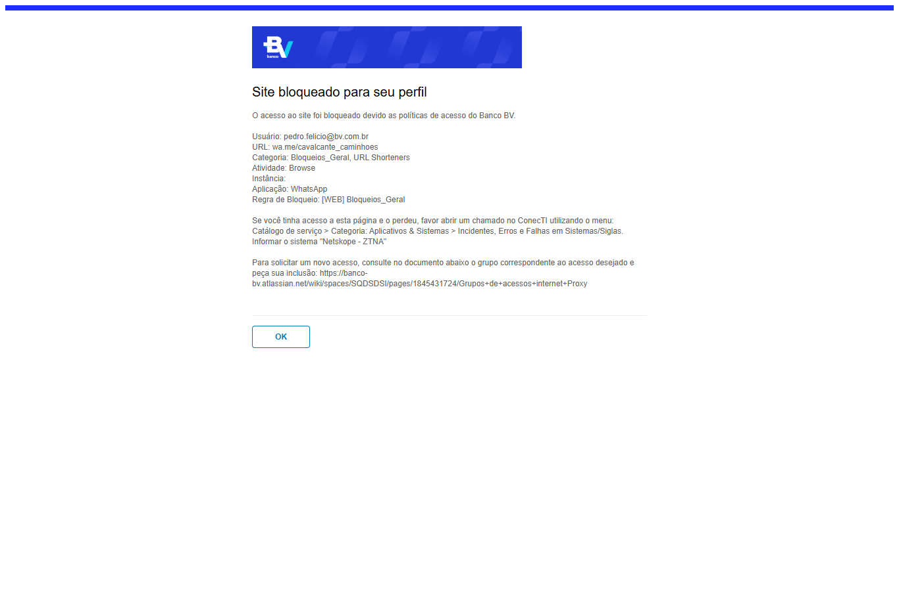

Ce6fdc4f59f — wa.me
https://wa.me/cavalcante_caminhoes
Prioridade: MEDIUM · Cenário: B_AMBIGUOUS_COMMUNICATION · Revisão humana: PENDING
1. Decisão Consolidada
Justificativa
Acesso direto bloqueado pelo proxy corporativo (E-COLLECT), sendo a análise fundamentada nas evidências de descoberta (E-DISC-001). Trata-se de revenda/intermediadora de veículos pesados ('Cavalcante Caminhões') dentro do escopo de investigação de COBANs. Embora afirme a condição de correspondente da BV Financeira, o canal omite a Razão Social e o CNPJ da empresa na sua apresentação comercial, ensejando revisão de conformidade à luz da Resolução CMN nº 4.935/2021 (cenário B_AMBIGUOUS_COMMUNICATION / REVIEW_REQUIRED). [Revisor: HUMAN_REVIEW] Questionamentos registrados; encaminhado para revisão humana.
Regras de consistência aplicadas
- acesso direto no navegador local bloqueado/indisponível; avaliação baseada nas evidências indexadas na descoberta (E-DISC-*)
Limitações
- conteúdo real do site não inspecionado (acesso bloqueado pela política de rede corporativa)
- apenas a URL descoberta foi inspecionada; páginas internas, formulários e fluxos após cliques não foram acessados
- acesso direto pelo navegador indisponível/bloqueado; identidade examinada apenas a partir das evidências indexadas na descoberta (E-DISC-*)
- nenhum cadastro autorizado de correspondentes carregado; CONFIRMED_COBAN indisponível nesta execução
- requisitos contratuais/internos não fornecidos: mapeamento limitado ao texto normativo
2. Screenshots


3. Catálogo de Evidências (Dados Brutos Observados)
| Ref | Tipo | Local | Conteúdo |
|---|---|---|---|
| E-URL | domain | url | URL final: https://wa.me/cavalcante_caminhoes (domínio: wa.me) |
| E-COLLECT | network | collection | Status da coleta: BLOCKED; HTTP 403; ocorrências: HTTP 403: acesso bloqueado pelo filtro web corporativo da rede |
| E-DISC-001 | text | search_index | Índice de busca (grounding): wa.me — **Estabelecimento / Perfil:** Cavalcante Caminhões (`+55 48 9612-1443`) | **URL:** `https://wa.me/554896121443` (e catálogo `wa.me/c/554896121443`) | Somos especialistas em aprovação para 1 caminhão"* | **Transparência / CNPJ:** A página afirma a condição de correspondente da BV Financeira, mas **omite a Razão Social e o CNPJ** da loja/revenda na apresentação do canal de atendimento |
| E-SHOT-VIEWPORT | screenshot | viewport | evidence\Ce6fdc4f59f\attempt-1\viewport.png (sha256 084ad32d886d3d33…) |
| E-SHOT-FULL | screenshot | page | evidence\Ce6fdc4f59f\attempt-1\fullpage.png (sha256 084ad32d886d3d33…) |
4. Análise de Marca (gemini-4-argon, brand-analyst/v5)
Dimensões Avaliadas
| Dimensão | Sinal | Achado | Refs |
|---|---|---|---|
| VISUAL_IDENTITY | NOT_ASSESSED | Não foi possível inspecionar a identidade visual da página final devido ao bloqueio pelo filtro web corporativo (HTTP 403). | E-COLLECT E-SHOT-VIEWPORT |
| DECLARED_COMMERCIAL_IDENTITY | CONFUSION | O perfil identifica-se pelo nome fantasia 'Cavalcante Caminhões' (+55 48 9612-1443), porém omite a Razão Social e o CNPJ da loja/revenda na apresentação do canal de atendimento. | E-URL E-DISC-001 |
| CORRESPONDENT_TRANSPARENCY | CONFUSION | Segundo o índice de busca (E-DISC-001), a página afirma a condição de correspondente da BV Financeira, mas sem a identificação formal obrigatória do correspondente (CNPJ e Razão Social). | E-DISC-001 |
| INSTITUTIONAL_LANGUAGE | NEUTRAL | O estabelecimento apresenta-se como especialista em aprovação para o primeiro caminhão e correspondente da BV Financeira, sem alegar ser um canal oficial do próprio banco. | E-DISC-001 |
| LOGO_USAGE | NOT_ASSESSED | Uso de logotipo não pôde ser verificado diretamente na página de destino em razão do bloqueio de rede. | E-COLLECT E-SHOT-VIEWPORT |
| SERVICE_JOURNEY | NEUTRAL | Direcionamento para atendimento comercial e captação de propostas de financiamento de caminhões via WhatsApp. | E-URL E-DISC-001 |
| CONTACT_CHANNELS | NEUTRAL | Canal de atendimento via WhatsApp (+55 48 9612-1443) associado à revenda Cavalcante Caminhões. | E-URL E-DISC-001 |
| CONSUMER_CONFUSION | CONFUSION | A ausência de CNPJ e razão social na apresentação de um canal que se declara correspondente da BV Financeira reduz a transparência exigida pela Resolução CMN nº 4.935/2021. | E-DISC-001 |
Indícios de Confusão
- [MEDIUM] DECLARED_COMMERCIAL_IDENTITY: O canal de WhatsApp da revenda 'Cavalcante Caminhões' atua na oferta/aprovação de financiamento de veículos ('especialistas em aprovação para 1 caminhão') vinculada à BV Financeira, mas omite a Razão Social e o CNPJ do estabelecimento comercial na apresentação do canal. — E-DISC-001 E-URL
- [MEDIUM] CORRESPONDENT_TRANSPARENCY: Embora mencione a condição de correspondente da BV Financeira segundo os dados indexados, não há exibição transparente de CNPJ, razão social ou canais de ouvidoria da instituição contratante conforme exigido pela Resolução CMN nº 4.935/2021. — E-DISC-001
Indícios de Relação Legítima
- [MEDIUM] CORRESPONDENT_TRANSPARENCY: O perfil declara atuar na condição de correspondente da BV Financeira e utiliza nome próprio de revenda ('Cavalcante Caminhões'). — E-DISC-001
Fatos Observados
- O acesso direto à URL https://wa.me/cavalcante_caminhoes foi bloqueado pelo filtro web corporativo (HTTP 403), conforme registrado em E-COLLECT e E-SHOT-VIEWPORT.
- De acordo com as evidências de descoberta (E-DISC-001), trata-se do canal de WhatsApp e catálogo do estabelecimento 'Cavalcante Caminhões' (+55 48 9612-1443).
- O perfil oferta intermediação/aprovação de crédito para veículos pesados ('Somos especialistas em aprovação para 1 caminhão') e afirma a condição de correspondente da BV Financeira (E-DISC-001).
- A página omite a Razão Social e o CNPJ da loja/revenda na apresentação do canal de atendimento (E-DISC-001).
Incertezas
- O conteúdo visual exato do perfil e do catálogo no WhatsApp não pôde ser inspecionado diretamente devido ao bloqueio de rede (HTTP 403).
Síntese do Analista
Acesso direto bloqueado pelo proxy corporativo (E-COLLECT), sendo a análise fundamentada nas evidências de descoberta (E-DISC-001). Trata-se de revenda/intermediadora de veículos pesados ('Cavalcante Caminhões') dentro do escopo de investigação de COBANs. Embora afirme a condição de correspondente da BV Financeira, o canal omite a Razão Social e o CNPJ da empresa na sua apresentação comercial, ensejando revisão de conformidade à luz da Resolução CMN nº 4.935/2021 (cenário B_AMBIGUOUS_COMMUNICATION / REVIEW_REQUIRED).
5. Identidade do Responsável
domain:wa.me
Nenhum CNPJ ou razão social identificáveis no conteúdo coletado.
Fatos Observados
| Tipo | Valor | Ref | Contexto |
|---|---|---|---|
| domain | wa.me | E-URL | |
| phone | 48 9612-1443 | E-DISC-001 | |
| Índice de busca (grounding): wa.me — **Estabelecimento / Perfil:** Cavalcante Caminhões (`+55 48 9612-1443`) | **URL:** `https://wa.me/554896121443` (e catálogo `wa.me/c/554896121443`) | Somos especia | E-DISC-001 |
Inferências de Associação (Não são Fatos)
- entidade agrupada pelo domínio registrável; um mesmo estabelecimento pode ter outros domínios não associados
- base da associação: domínio (sem CNPJ)
6. Mapeamento de Conformidade (Hipóteses)
Mapeamento indicativo para apoio à auditoria. Não constitui conclusão regulatória; a decisão definitiva pertence à auditoria.
Res. CMN 4.935/2021, art. 14, inciso II — NO_INDICATION_OBSERVED
Fonte: NORMATIVE
Art. 14. O contrato de correspondente deve estabelecer: [...] II - vedação à utilização, pelo contratado, de logomarca ou de outros atributos que sejam similares aos adotados pela instituição contratante em suas agências, postos de atendimento, sítio eletrônico na internet, aplicativo ou outras plataformas de comunicação em rede;
Evidência observada: —
Res. CMN 4.935/2021, art. 14, inciso III, alíneas a e b — NOT_APPLICABLE_UNLESS_COBAN
Fonte: NORMATIVE
Art. 14. O contrato de correspondente deve estabelecer: [...] III - divulgação ao público, pelo contratado, de sua condição de prestador de serviços à instituição contratante, identificada pelo nome com que é conhecida no mercado, com descrição dos produtos e serviços oferecidos e canais de contato da instituição contratante, inclusive de sua ouvidoria, em local visível, em destaque e em formato legível, por meio de: a) sítio eletrônico do correspondente na internet, acessível na página inicial; b) aplicativo e outras plataformas de comunicação em rede do correspondente; [...]
Hipótese: Há declaração da condição de correspondente/prestador, mas outros elementos da página (DECLARED_COMMERCIAL_IDENTITY, CONSUMER_CONFUSION) podem contradizê-la ou reduzir seu efeito (destaque, legibilidade e identificação da contratante a verificar). A norma disciplina correspondentes contratados; o responsável não foi identificado como correspondente.
Evidência observada: E-DISC-001 E-URL
Informação faltante:
- confirmar se o responsável é correspondente contratado (relação pública da contratante — art. 21 — ou base interna)
- canais de contato/ouvidoria da contratante não observados no material coletado (podem existir em páginas não inspecionadas)
Res. CMN 4.935/2021, art. 3º — NO_INDICATION_OBSERVED
Fonte: NORMATIVE
Art. 3º O correspondente atua por conta e sob as diretrizes da instituição contratante, que assume inteira responsabilidade pelo atendimento prestado aos clientes e usuários por meio do contratado.
Evidência observada: —
Se o responsável não for correspondente contratado, os indícios podem caracterizar uso indevido de marca ou fraude, fora do escopo da Res. 4.935: avaliar encaminhamento às áreas jurídica/segurança.
Limitações: requisitos contratuais/internos não fornecidos: mapeamento limitado ao texto normativo
7. Revisão Crítica (heuristic-reviewer-v1)
Decisão: HUMAN_REVIEW → REVIEW_REQUIRED / MEDIUM
Questionamentos registrados; encaminhado para revisão humana.
| Tema | Severidade | Questionamento | Refs |
|---|---|---|---|
| domain_attribution | MEDIUM | Responsável pela página não identificado; a conclusão sobre a marca não pode ser atribuída a um estabelecimento específico. | E-URL |
8. Origem da Descoberta
| Fonte | Consulta / hipótese | URL original | Título / trecho |
|---|---|---|---|
| grounding | Objetivo: Links e páginas de captação via WhatsApp (wa.me) utilizando a marca.
Execute no Google Search as seguintes consultas (dorks):
- ("wa.me" OR "api.whatsapp.com") ("Banco BV" OR "bv financeira") (financiamento OR correspondente OR veículos) -site:bv.com.br -site:bancobv.com.br -site:bvfinanceira.com.br -site:bvinvestimentos.com.br -site:napista.com.br -site:bvopen.com.br -site:meufinanciamentosolar.com.br -site:votorantim.com.br -site:vam.com.br -site:reclameaqui.com.br -site:jusbrasil.com.br -site:jus.br -site:weebly.com -site:site123.me
Liste de forma abrangente as páginas públicas encontradas (até 12 resultados distintos), informando para cada uma o nome do estabelecimento/perfil, a URL e como a marca é utilizada (destaque visual, título, feirão, simulador, redes sociais e se há ou não identificação clara de CNPJ e condição de correspondente bancário). H6-platform:WhatsApp | https://wa.me/cavalcante_caminhoes | wa.me **Estabelecimento / Perfil:** Cavalcante Caminhões (`+55 48 9612-1443`) | **URL:** `https://wa.me/554896121443` (e catálogo `wa.me/c/554896121443`) | Somos especialistas em aprovação para 1 caminhão"* | **Transparência / CNPJ:** A página afirma a condição de correspondente da BV Financeira, mas **omite a Razão Social e o CNPJ** da loja/revenda na apresentação do canal de atendimento |
9. Cadeia de Custódia da Coleta
sha256 b5934829612460b63800327e1d3b43ca838eed49f9293bbe89b5f5f6c02d36f1
Original: https://wa.me/cavalcante_caminhoes
Final: https://wa.me/cavalcante_caminhoes
| Artefato | Caminho | SHA-256 | Bytes |
|---|---|---|---|
| screenshot_viewport | evidence\Ce6fdc4f59f\attempt-1\viewport.png | 084ad32d886d3d33c085f6e48244aab7ec2c3d58c38376009e096b78f95cf10b | 47892 |
| screenshot_full | evidence\Ce6fdc4f59f\attempt-1\fullpage.png | 084ad32d886d3d33c085f6e48244aab7ec2c3d58c38376009e096b78f95cf10b | 47892 |
| html | evidence\Ce6fdc4f59f\attempt-1\page.html.txt | 995ef0a75c74390ce186887e51c967ff4db9100221e0543ac826bf450375fb29 | 65549 |
| text | evidence\Ce6fdc4f59f\attempt-1\text.txt | c2742b6cc110350e890b2e041877d819ba32cf9571ef67e4a4366bc1d64d9df5 | 787 |
| page_data | evidence\Ce6fdc4f59f\attempt-1\page.json | 14220d958e539b321e68ca3520ea09f9c1c7ae20f5aa23daf100bfaf77f3efc3 | 2738 |
Ocorrências e conteúdo não inspecionado
- HTTP 403: acesso bloqueado pelo filtro web corporativo da rede
- conteúdo real do site não inspecionado (acesso bloqueado pela política de rede corporativa)
- apenas a URL descoberta foi inspecionada; páginas internas, formulários e fluxos após cliques não foram acessados
10. Histórico de Estados
| Quando | De | Para | Nota |
|---|---|---|---|
| 2026-11-23T14:17:59+00:00 | DISCOVERED | QUEUED | prioritised (score 1.0) |
| 2026-11-23T15:02:38+00:00 | QUEUED | COLLECTING | |
| 2026-11-23T15:02:43+00:00 | COLLECTING | COLLECTED | |
| 2026-11-23T15:02:43+00:00 | COLLECTED | ANALYZING | |
| 2026-11-23T15:03:13+00:00 | ANALYZING | REVIEWING | |
| 2026-11-23T15:03:13+00:00 | REVIEWING | COMPLETED |